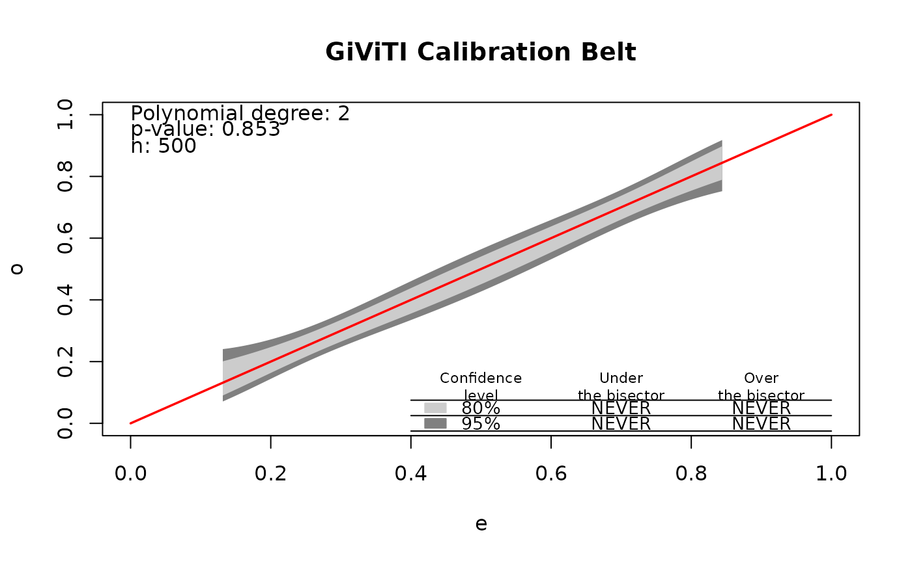

Runs several goodness-of-fit tests for a binary logistic regression in one
call and returns one tidy data.frame, one row per test. Pass a fitted
glm to run the whole battery; pass (y, predicted_probs) to run
the tests that need only predictions. Each test is wrapped so that a failure of
one test never aborts the whole run.
Arguments
- object
A fitted binary logistic
glm, or a binary (0/1) response vectory(then supplypredicted_probs).- predicted_probs
Numeric predicted probabilities; required when
objectis ayvector.- X
Optional design matrix; lets the directed (DEF) tests run from the
(y, predicted_probs)form.- tests
Either
"all"(default) or a character vector of test names to run (e.g.c("EF","DEF.poly3","HL")).- G
Integer number of groups passed to the grouping tests (default 10).
- include_slow
Logical; when
TRUE(the default) the full battery runs, including the slow tests: le Cessie-van Houwelingen smoothing (O(n^2)-O(n^3)), the GAM tests, Stute-Zhu, eHL, BAGofT, and GiViTI. SetFALSEfor a quick run with the fast tests only. A one-time message notes this whenever slow tests are included.- parallel
Logical; when
TRUE, the resampling loops of the slow bootstrap tests (Stute-ZhuandLai-Liu-HL) are run on a local PSOCK cluster viaparLapply(works on all platforms, including Windows). All other tests are unaffected. The defaultFALSEkeeps every loop sequential, exactly as in previous versions.- ncores
Integer; the number of worker processes used when
parallel = TRUE. The defaultNULLusesmax(1, parallel::detectCores() - 1). Values below 2 fall back to the sequential path.- calibration_plot
Logical; when
TRUEandGiViTIis among the tests, also compute and draw the GiViTI calibration belt and store it on the result (retrievable withplot()). DefaultFALSE.- install
One of
"ask"(default),"no", or"yes", controlling what happens when a test in the run needs an optional package that is not installed. In an interactive session,"ask"lists the missing packages and asks before installing, and"yes"installs them without asking;"no"never installs (the test is just skipped with a note). In a non-interactive session (scripts,R CMD check) nothing is ever installed, regardless of this setting. Seegof_install_suggests.- control
Optional named list of per-test options. Recognized entries:
"Stute-Zhu" = list(B = ...)(bootstrap replicates);GiViTI = list(devel = "internal"/"external");"Lai-Liu-HL" = list(n0 = ..., k = ..., alpha = ...); andBAGofT = list(...)which forwards to the binary adaptive test –nsim(resampling iterations; default 100),nsplits,ne(the estimation-split size), and the random-forest partitioner's tuningKmax(maximum number of adaptive partition cells),ntree,nmin,mtry,maxnodes. Example:list(BAGofT = list(nsim = 200, Kmax = 8, ntree = 500)).
Value
A data.frame (of class gof_battery) with columns
Test, Family, Statistic, df, p_value,
and Note, one row per test. A dedicated print method shows the
rows grouped by family with formatted p-values and significance flags; the
underlying columns remain available for programmatic use.
Details
How to read the battery. Every test here answers the same question – does the fitted model describe the data it was fitted to – but they differ in the departure each is built to notice. That is why the panel is more informative than any single p-value: agreement across families is evidence of fit, and disagreement tells you what kind of misfit is present. A test that rejects points at the departure its own construction is sensitive to.
The one thing the panel cannot do is rescue an invalid reference distribution. Under sparse data – almost every covariate pattern unique – the classical chi-square references fail, which is the situation this package was written for.
Every row the battery returns carries a Family label, and the sections below are
those labels: find the label in the output, then the section of the same name here.
Global and Standardized statistics (Family "Global", "Standardized"). These compare observed and
fitted responses over the whole sample without grouping.
Pearson– the sum of squared Pearson residuals. Its chi-square reference assumes many observations per covariate pattern. On sparse data that assumption fails and the test is unreliable in both directions; it is reported for completeness and comparison, not for use.Deviance– the likelihood-ratio statistic against the saturated model. On ungrouped binary data its expectation depends on the fitted risks alone and not on whether they agree with the responses, so it sits above \(n - p\) when the fitted risks are near one half and far below it when they are extreme; the direction of the error is set by the risk profile rather than by the fit. On a correctly specified model with mid-range risks it therefore rejects almost always. It is reported for completeness and comparison, not for use.Osius-Rojek– rescues the Pearson statistic by standardizing it with its asymptotic mean and variance computed under increasing sample size rather than increasing cell counts, giving a normal reference that stays valid when patterns are unique. Fast, parameter-free, and a sensible default. It can be anti-conservative at small samples and conservative under a strongly skewed covariate.McCullagh– standardizes the Pearson statistic by its exact conditional moments rather than asymptotic ones (computed by the Kuss 2002 algorithm). Typically the most powerful of the global statistics, at a cost that grows steeply with sample size.Copas-RSS– the unweighted sum of squares of the raw residuals, referred to its own moments. Weighting each residual equally rather than by its variance makes it comparatively sensitive to misfit in the middle of the risk range.Information-Matrix– the White/Orme test. It compares two estimators of the information matrix that agree only if the model is correctly specified, so it is an omnibus check on the whole specification rather than on calibration alone.
Partition tests (Family "Partition"). These sort observations by fitted risk, group them,
and compare observed with expected counts group by group.
HL– the Hosmer-Lemeshow test, the field's default: G groups cut at percentiles of fitted risk (the "deciles of risk" whenG = 10), referred to chi-square on \(G - 2\) degrees of freedom. Note that this reference was established by simulation, not derivation. Familiar and cheap, but modest in power, and its result depends on the grouping.HL-equalwidth– the same statistic with groups cut at fixed probability intervals instead of percentiles. When fitted risks are concentrated in a narrow range, intervals can come out empty and the test may not be computable at all, which is why percentile grouping is usually preferred.Pigeon-Heyse– a variance-corrected Hosmer-Lemeshow statistic that accounts for the variability of fitted probabilities within each group. The correction is conservative in sparse designs, so a non-rejection carries less weight than the nominal level suggests.F-test– deviance residuals compared across the risk groups by a one-way analysis of variance. It is markedly liberal under sparsity and grows more so with sample size; it is included for comparison.Lai-Liu-HL– Lai and Liu's procedure for using the Hosmer-Lemeshow test in large samples, where any test eventually rejects. It standardizes power to a reference sample sizen0and so returns no p-value: the statistic is the standardized power and the accept/reject decision appears in theNotecolumn. Tune withcontrol = list("Lai-Liu-HL" = list(n0 = ..., k = ...)).
Directed tests (Family "Directed"). Rather than asking whether anything is wrong, these
ask whether a particular shape of departure is present, which buys
power when the guess is right.
EF,EF-normal– the omnibus Ebrahim-Farrington test, with the chi-square and normal references respectively. Built for sparse data, where the classical grouped statistics lose their reference.DEF.poly2,DEF.poly3,DEF.stukel– the directed forms, each aiming the test at a smooth departure in the shape of the calibration curve: a quadratic or cubic drift in the linear predictor, or Stukel's asymmetry-and-tail family. Powerful when the misfit resembles the chosen basis, weaker when it does not.Stukel– a two-degree-of-freedom score test against Stukel's generalized logistic link, which nests the logit and lets the two tails bend independently. It is aimed squarely at link misspecification. Note that the combined two-parameter form does not always hold its nominal level in sparse designs; the one-sided components are better behaved.
Covariate-space tests (Family "Covariate-space"). These partition the covariates themselves
rather than the fitted risk, so they can see structure that risk-ordering
averages away – an omitted interaction, for instance, need not disturb the
marginal calibration at all.
Tsiatis– a score test that adds indicator variables for regions of the covariate space and asks whether they improve the fit.Xie– clusters the covariate space and compares observed with expected counts per cluster, using the corrected degrees of freedom \(G - k/2 - 1\) with \(k\) the number of predictors.Pulkstenis-Robinson– crosses a categorical covariate with risk groups, so it needs at least one categorical predictor. The package auto-detects one (any factor, character or logical, or a numeric with few distinct values, controlled bygetOption("ebrahim.gof.pr.maxlev", 6)) and returnsNAwith a note when there is none.
Smoothing and GAM tests (Family "Smoothing", "GAM"). These replace grouping with a smoother, so nothing
is lost to an arbitrary choice of bin edges.
le-Cessie– the le Cessie-van Houwelingen score test, which smooths the residuals over the covariate space with a kernel and asks whether the smoothed surface is further from zero than chance allows. Sensitive to local structure that omnibus statistics average away, and one of the most expensive tests here, with cost growing sharply in the sample size.HL-GAM,PR-GAM,Xie-GAM– variants that fit a deliberately overfitted generalized additive model and use it to define the grouping, letting the data rather than the analyst choose where the boundaries fall. These need mgcv.
Resampling tests (Family "Bootstrap"). When a statistic has no usable closed-form
reference, these build one by simulation.
Stute-Zhu– a cumulative-residual test: residuals are accumulated along the fitted linear predictor and the largest excursion of that path is compared with a parametric bootstrap. It needs no binning and no bandwidth, and in practice it is the best-behaved test in the battery on size. Set the number of resamples withcontrol = list("Stute-Zhu" = list(B = ...)).BAGofT– the binary adaptive test, which splits the data, uses one part to learn a partition that separates fitted from observed, and tests on the other. Its behaviour depends strongly on how many splits and resamples it is given; set them withcontrol = list(BAGofT = list(nsim = ...))and be aware that the published default is far more expensive than a single split. Needs the BAGofT package.
Calibration tests (Family "Calibration"). These come from clinical prediction, and ask
directly whether predicted risks match observed frequencies.
GiViTI,GiViTI-external– the GiViTI polynomial calibration test, which fits a polynomial of the fitted risk and tests whether it departs from the identity, under the internal and external development assumptions respectively. The two are not interchangeable: on data used to fit the model the internal form is the appropriate one. It also produces the calibration belt, which shows where on the risk scale a model drifts; seecalibration_plot. Wraps givitiR in an isolated callr subprocess, so a failure inside its compiled dependencies returnsNAinstead of ending your session. Select withcontrol = list(GiViTI = list(devel = "internal")).eHL– an e-value form of the Hosmer-Lemeshow test, reported as \(p = \min(1, 1/e)\). E-values are safe under optional stopping, which conventional p-values are not, but the conversion shown here is conservative.
Combinations (Family "Ensemble"). Rather than choosing one test, these pool several.
Ensemble.Vote(3DEF)andEnsemble.Univ(3DEF+EF)– Cauchy combinations of the directed tests, and of those plus the omnibus EF. The Cauchy combination is valid without knowing how the members correlate, which is what makes pooling dependent tests possible at all. The point is to avoid having to guess the departure in advance, at the cost of being slightly less powerful than the single best member would have been.See also
legoft, a pretrained combination whose weights are fixed offline and ship frozen, so two analysts running it on the same data obtain the same p-value.
Implementation notes. Tsiatis and Xie cluster the
covariate space with k-means using a fixed internal seed, so results are
reproducible and your own random stream is left untouched. Every bundled test
reproduces the implementation used in the original simulation study:
Osius-Rojek and Stukel follow LogisticDx's
gof.glm (Stukel via statmod::glm.scoretest when statmod is
installed), Copas-RSS follows the rms gof residual, and
HL follows ResourceSelection::hoslem.test.
Procedures the battery does not select. Some of the package's own methods are
not part of the panel and are called directly on the fitted model, their p-values read
beside it: deepgof1 and legoft are of that kind. Naming
them in tests does not reach them.
For goodness of fit after penalized fitting, where none of the above references
are valid because the coefficients are shrunk, use calm.gof or
shrink.gof. These take the design, the response and the penalty rather
than a fitted glm, so they are called separately from the battery.
Note
Grouped vs sparse forms. Pearson, Deviance and
McCullagh are reported in two forms: the default (sparse / one-trial)
form and a "(grouped)" form computed on the distinct covariate
patterns (each a Binomial\((m_g, P_g)\)). The two are identical when every
covariate pattern is unique (fully sparse data, as in the simulation) and
differ only when patterns repeat (\(m_g > 1\)). To avoid clutter, the
"(grouped)" row is shown only when it actually differs from the
sparse form (i.e., when some pattern repeats); on fully sparse data it is a
duplicate and is omitted. Osius-Rojek is always computed on covariate
patterns, matching its classical (LogisticDx) definition.
Farrington vs EF. The original Farrington (1996) test is a
grouped (covariate-pattern) test. The Ebrahim-Farrington (EF) test is
its sparse-data counterpart: it does not group by covariate pattern
but forms G data-dependent bins of the predicted risk, so it applies
directly to fully sparse data. Use EF for sparse binary data; the
grouped Farrington form is appropriate only when covariate patterns repeat.
Reproducibility of the parallel path. With parallel = TRUE
the cluster's random-number streams are initialized with
clusterSetRNGStream, seeded deterministically from
the session's current RNG state. Two runs from the same
set.seed state (and the same ncores) therefore give
identical bootstrap p-values. Note that the parallel L'Ecuyer-CMRG streams
necessarily differ from the serial RNG stream, so parallel = TRUE
results differ (within Monte-Carlo error) from parallel = FALSE
results at the same seed; this is standard and both are valid. Results also
depend on ncores, because the replicates are split across workers.
References
The aggregated tests are due to their original authors; they are provided here for comparison and credited as follows.
Farrington CP (1996). "On Assessing Goodness of Fit of Generalized Linear Models to Sparse Data." Journal of the Royal Statistical Society B, 58(2), 349–360. doi:10.1111/j.2517-6161.1996.tb02086.x
Hosmer DW, Lemeshow S (1980). "Goodness of Fit Tests for the Multiple Logistic Regression Model." Communications in Statistics – Theory and Methods, 9(10), 1043–1069. doi:10.1080/03610928008827941
McCullagh P (1985). "On the Asymptotic Distribution of Pearson's Statistic in Linear Exponential Family Models." International Statistical Review, 53(1), 61–67. doi:10.2307/1402880
Osius G, Rojek D (1992). "Normal Goodness-of-Fit Tests for Multinomial Models with Large Degrees of Freedom." Journal of the American Statistical Association, 87(420), 1145–1152. doi:10.1080/01621459.1992.10476271
le Cessie S, van Houwelingen JC (1991). "A Goodness-of-Fit Test for Binary Regression Models, Based on Smoothing Methods." Biometrics, 47(4), 1267–1282. doi:10.2307/2532385
Stukel TA (1988). "Generalized Logistic Models." Journal of the American Statistical Association, 83(402), 426–431. doi:10.1080/01621459.1988.10478613
Stute W, Zhu LX (2002). "Model Checks for Generalized Linear Models." Scandinavian Journal of Statistics, 29(3), 535–545. doi:10.1111/1467-9469.00304
Tsiatis AA (1980). "A Note on a Goodness-of-Fit Test for the Logistic Regression Model." Biometrika, 67(1), 250–251. doi:10.1093/biomet/67.1.250
Xie XJ, Pendergast J, Clarke W (2008). "Increasing the Power: A Practical Approach to Goodness-of-Fit Test for Logistic Regression Models with Continuous Predictors." Computational Statistics & Data Analysis, 52(5), 2703–2713. doi:10.1016/j.csda.2007.09.027
Pulkstenis E, Robinson TJ (2002). "Two Goodness-of-Fit Tests for Logistic Regression Models with Continuous Covariates." Statistics in Medicine, 21(1), 79–93. doi:10.1002/sim.943
Nattino G, Finazzi S, Bertolini G (2014). "A New Calibration Test and a Reappraisal of the Calibration Belt for the Assessment of Prediction Models Based on Dichotomous Outcomes." Statistics in Medicine, 33(14), 2390–2407. doi:10.1002/sim.6100
Zhang J, Ding J, Yang Y (2021). "Is a Classification Procedure Good Enough? A Goodness-of-Fit Assessment Tool for Classification Learning." Journal of the American Statistical Association. doi:10.1080/01621459.2021.1979010
Pigeon JG, Heyse JF (1999). "An Improved Goodness of Fit Statistic for Probability Prediction Models." Biometrical Journal, 41(1), 71–82. doi:10.1002/(SICI)1521-4036(199903)41:1<71::AID-BIMJ71>3.0.CO;2-O
Copas JB (1989). "Unweighted Sum of Squares Test for Proportions." Journal of the Royal Statistical Society C, 38(1), 71–80. doi:10.2307/2347682
White H (1982). "Maximum Likelihood Estimation of Misspecified Models." Econometrica, 50(1), 1–25. doi:10.2307/1912526
Orme C (1988). "The Calculation of the Information Matrix Test for Binary Data Models." The Manchester School, 56(4), 370–376. doi:10.1111/j.1467-9957.1988.tb01339.x
Kuss O (2002). "Global Goodness-of-Fit Tests in Logistic Regression with Sparse Data." Statistics in Medicine, 21(24), 3789–3801. doi:10.1002/sim.1421
Lai X, Liu L (2018). "A Simple Test Procedure in Standardizing the Power of Hosmer-Lemeshow Test in Large Data Sets." Journal of Statistical Computation and Simulation, 88(13), 2463–2472. doi:10.1080/00949655.2018.1467912
Nattino G, Finazzi S, Bertolini G (2014). "A New Calibration Test and a Reappraisal of the Calibration Belt for the Assessment of Prediction Models Based on Dichotomous Outcomes." Statistics in Medicine, 33(14), 2390–2407. doi:10.1002/sim.6100
Zhang J, Ding J, Yang Y (2021). "Is a Classification Procedure Good Enough? A Goodness-of-Fit Assessment Tool for Classification Learning." Journal of the American Statistical Association, 118(541), 194–206. doi:10.1080/01621459.2021.1979010
Liu Y, Xie J (2020). "Cauchy Combination Test: A Powerful Test with Analytic p-Value Calculation under Arbitrary Dependency Structures." Journal of the American Statistical Association, 115(529), 393–402. doi:10.1080/01621459.2018.1554485
Hosmer DW, Hosmer T, le Cessie S, Lemeshow S (1997). "A Comparison of Goodness-of-Fit Tests for the Logistic Regression Model." Statistics in Medicine, 16(9), 965–980. doi:10.1002/(sici)1097-0258(19970515)16:9<965::aid-sim509>3.0.co;2-o
The methods introduced by this package, and the studies that evaluate them, are reported in the following. Reproduction materials for each are archived and citable.
Ebrahim EK, El-Kotory A (2026). "A Directional Hosmer-Lemeshow Goodness-of-Fit Test for Sparse Logistic Regression." arXiv:2607.15454 [stat.ME]. doi:10.48550/arXiv.2607.15454
Ebrahim EK, El-Kotory A (2026). "Benchmarking Goodness-of-Fit and Calibration Algorithms for Logistic Regression Classifiers: A Large-Scale Simulation Study under Sparse Data." Journal of Intelligent Computing and Data Science, in press. arXiv:2607.16344 [stat.ME]. doi:10.48550/arXiv.2607.16344 Reproduction materials: doi:10.5281/zenodo.21286171
Ebrahim EK (2026). "Goodness-of-Fit Tests and Calibration Machine-Learning Algorithms for Logistic Regression with Sparse Data." M.Sc. thesis, Alexandria University. arXiv:2608.11140 [stat.ME]. doi:10.48550/arXiv.2608.11140
Ebrahim EK (2026). "EDGE: a directed goodness-of-fit test for sparse logistic regression." Reproduction materials. doi:10.5281/zenodo.21247541
Ebrahim EK (2026). "EDGES: A Selection-Free Ensemble Goodness-of-Fit Test." Reproduction materials. doi:10.5281/zenodo.21320865
Ebrahim EK (2026). "Detection Subspaces: A Theory of Goodness-of-Fit Tests." Reproduction materials. doi:10.5281/zenodo.21687498
Ebrahim EK (2026). "Shrinkage Invalidates the Hosmer-Lemeshow Test."
Reproduction materials for shrink.gof.
doi:10.5281/zenodo.21900114
Author
Ebrahim Khaled Ebrahim ebrahimkhaled@alexu.edu.eg
Examples
set.seed(1)
n <- 500
x <- runif(n, -3, 3)
y <- rbinom(n, 1, 1 / (1 + exp(-(0.6 * x))))
fit <- glm(y ~ x, family = binomial())
## The fast tests. Every covariate pattern here is unique, so this is the
## sparse case the package is written for.
res <- run.all.gof(fit, include_slow = FALSE)
res
#>
#> Goodness-of-fit battery: 21 tests (1 reject at 0.05)
#> ========================================================
#> Test Statistic df p-value
#> --- Global --------------------------------------------
#> Pearson 497.5 498 0.4982
#> Deviance 587 498 0.0036 **
#> Information-Matrix 1.022 2 0.5999
#> --- Standardized --------------------------------------
#> Osius-Rojek -0.1689 0.8659
#> McCullagh -0.7955 0.7868
#> Copas-RSS 0.9692 1 0.3324
#> EF -1.12 8 0.8976
#> EF-normal [a] -1.12 8 0.8686
#> --- Partition -----------------------------------------
#> HL 3.423 8 0.9051
#> HL-equalwidth 6.803 6 0.3394
#> Pigeon-Heyse 3.43 9 0.9448
#> F-test [b] 1.174 9 0.3094
#> --- Covariate-space -----------------------------------
#> Tsiatis 6.089 9 0.7310
#> Xie 5.338 8.5 0.7649
#> Pulkstenis-Robinson [c] -
#> --- Directed ------------------------------------------
#> DEF.poly2 0.01459 1.03 0.9089
#> DEF.poly3 1.291 2.02 0.5265
#> DEF.stukel 1.223 1.86 0.4450
#> Stukel 0.3945 2 0.8210
#> --- Ensemble ------------------------------------------
#> Ensemble.Vote(3DEF) [d] 0.7654
#> Ensemble.Univ(3DEF+EF) [d] 0.8201
#> --------------------------------------------------------
#> Signif.: *** <.001 ** <.01 * <.05 . <.1
#> Notes:
#> [a] normal reference (thesis)
#> [b] deviance residuals ~ groups (ANOVA F)
#> [c] Not applicable: needs a categorical covariate
#> [d] Cauchy combination of the directed tests
## The return value is a plain data.frame, so the panel can be read
## programmatically as well as printed.
res[res$p_value < 0.05, c("Test", "Family", "p_value")] # what rejected
#>
#> Goodness-of-fit battery: 2 tests (1 reject at 0.05)
#> ====================================
#> Test Statistic df p-value
#> --- Global ------------------------
#> Deviance NA NA 0.0036 **
#> --- NA ----------------------------
#> NA NA NA -
#> ------------------------------------
#> Signif.: *** <.001 ** <.01 * <.05 . <.1
table(res$Family) # coverage by family
#>
#> Covariate-space Directed Ensemble Global Partition
#> 3 4 2 3 4
#> Standardized
#> 5
## A correctly specified model: the panel should mostly agree, and any
## isolated rejection is the false positive you expect at the 5 percent level.
mean(res$p_value < 0.05, na.rm = TRUE)
#> [1] 0.05
## Now a model that is genuinely wrong -- the quadratic term is omitted.
y2 <- rbinom(n, 1, 1 / (1 + exp(-(0.6 * x + 0.5 * x^2))))
bad <- glm(y2 ~ x, family = binomial())
run.all.gof(bad, include_slow = FALSE)
#>
#> Goodness-of-fit battery: 21 tests (18 reject at 0.05)
#> ========================================================
#> Test Statistic df p-value
#> --- Global --------------------------------------------
#> Pearson 471.2 498 0.8007
#> Deviance 565.5 498 0.0192 *
#> Information-Matrix 73.91 2 8.9e-17 ***
#> --- Standardized --------------------------------------
#> Osius-Rojek -7.002 2.5e-12 ***
#> McCullagh -7.515 1.0000
#> Copas-RSS 8.11 1 5.0e-16 ***
#> EF 16.83 8 4.3e-13 ***
#> EF-normal [a] 16.83 8 0.0e+00 ***
#> --- Partition -----------------------------------------
#> HL 74.8 8 5.4e-13 ***
#> HL-equalwidth 54.63 3 8.2e-12 ***
#> Pigeon-Heyse 74.85 9 1.7e-12 ***
#> F-test [b] 9.571 9 1.7e-13 ***
#> --- Covariate-space -----------------------------------
#> Tsiatis 75.23 9 1.4e-12 ***
#> Xie 77.52 8.5 2.8e-13 ***
#> Pulkstenis-Robinson [c] -
#> --- Directed ------------------------------------------
#> DEF.poly2 69.03 1.02 6.7e-17 ***
#> DEF.poly3 69.47 2.02 6.9e-16 ***
#> DEF.stukel 31.34 1.01 1.4e-14 ***
#> Stukel 72.8 2 1.6e-16 ***
#> --- Ensemble ------------------------------------------
#> Ensemble.Vote(3DEF) [d] 1.4e-15 ***
#> Ensemble.Univ(3DEF+EF) [d] 1.9e-15 ***
#> --------------------------------------------------------
#> Signif.: *** <.001 ** <.01 * <.05 . <.1
#> Notes:
#> [a] normal reference (thesis)
#> [b] deviance residuals ~ groups (ANOVA F)
#> [c] Not applicable: needs a categorical covariate
#> [d] Cauchy combination of the directed tests
## Pick specific tests, for instance one per family, which is the pairing the
## package recommends over relying on any single statistic.
run.all.gof(fit, tests = c("McCullagh", "HL", "Stukel", "Tsiatis"))
#>
#> Goodness-of-fit battery: 4 tests (0 reject at 0.05)
#> =======================================
#> Test Statistic df p-value
#> --- Standardized ---------------------
#> McCullagh -0.7955 0.7868
#> --- Partition ------------------------
#> HL 3.423 8 0.9051
#> --- Covariate-space ------------------
#> Tsiatis 6.089 9 0.7310
#> --- Directed -------------------------
#> Stukel 0.3945 2 0.8210
#> ---------------------------------------
#> Signif.: *** <.001 ** <.01 * <.05 . <.1
## Grouping tests take the number of groups; the choice is a convention
## rather than a derived optimum, so it is worth varying.
for (g in c(5, 10, 20))
print(run.all.gof(fit, tests = "HL", G = g))
#>
#> Goodness-of-fit battery: 1 tests (0 reject at 0.05)
#> ==================================
#> Test Statistic df p-value
#> --- Partition -------------------
#> HL 1.99 3 0.5745
#> ----------------------------------
#> Signif.: *** <.001 ** <.01 * <.05 . <.1
#>
#> Goodness-of-fit battery: 1 tests (0 reject at 0.05)
#> ==================================
#> Test Statistic df p-value
#> --- Partition -------------------
#> HL 3.423 8 0.9051
#> ----------------------------------
#> Signif.: *** <.001 ** <.01 * <.05 . <.1
#>
#> Goodness-of-fit battery: 1 tests (0 reject at 0.05)
#> ==================================
#> Test Statistic df p-value
#> --- Partition -------------------
#> HL 7.616 18 0.9838
#> ----------------------------------
#> Signif.: *** <.001 ** <.01 * <.05 . <.1
# \donttest{
## The full battery (include_slow = TRUE by default). The slow tests need the
## suggested packages mgcv, BAGofT, givitiR and callr; in an interactive
## session run.all.gof() offers to install any that are missing
## (install = "ask"). See also gof_install_suggests().
## The control= list forwards options to the individual tests; the reductions
## here keep the example quick without changing what it demonstrates.
run.all.gof(fit, install = "no",
control = list("Stute-Zhu" = list(B = 50),
BAGofT = list(nsim = 20)))
#> run.all.gof: running the full battery, including the slow tests (le-Cessie, the GAM tests, Stute-Zhu, eHL, BAGofT, GiViTI). For a quick run with the fast tests only, set include_slow = FALSE.
#>
#> Goodness-of-fit battery: 31 tests (1 reject at 0.05)
#> ========================================================
#> Test Statistic df p-value
#> --- Global --------------------------------------------
#> Pearson 497.5 498 0.4982
#> Deviance 587 498 0.0036 **
#> Information-Matrix 1.022 2 0.5999
#> --- Standardized --------------------------------------
#> Osius-Rojek -0.1689 0.8659
#> McCullagh -0.7955 0.7868
#> Copas-RSS 0.9692 1 0.3324
#> EF -1.12 8 0.8976
#> EF-normal [a] -1.12 8 0.8686
#> --- Partition -----------------------------------------
#> HL 3.423 8 0.9051
#> HL-equalwidth 6.803 6 0.3394
#> Pigeon-Heyse 3.43 9 0.9448
#> F-test [b] 1.174 9 0.3094
#> --- Covariate-space -----------------------------------
#> Tsiatis 6.089 9 0.7310
#> Xie 5.338 8.5 0.7649
#> Pulkstenis-Robinson [c] -
#> --- Directed ------------------------------------------
#> DEF.poly2 0.01459 1.03 0.9089
#> DEF.poly3 1.291 2.02 0.5265
#> DEF.stukel 1.223 1.86 0.4450
#> Stukel 0.3945 2 0.8210
#> --- Smoothing -----------------------------------------
#> le-Cessie 3.073 4.17 0.5720
#> --- GAM -----------------------------------------------
#> HL-GAM 3.423 8 0.9051
#> PR-GAM [c] -
#> Xie-GAM 5.338 8 0.7209
#> --- Bootstrap -----------------------------------------
#> Stute-Zhu [d] 0.008052 0.7000
#> BAGofT [e] 0.4000
#> Lai-Liu-HL [f] 0.3 -
#> --- Calibration ---------------------------------------
#> eHL [g] 0.02288 1.0000
#> GiViTI [h] 0.8531
#> GiViTI-external [i] 1.0000
#> --- Ensemble ------------------------------------------
#> Ensemble.Vote(3DEF) [j] 0.7654
#> Ensemble.Univ(3DEF+EF) [j] 0.8201
#> --------------------------------------------------------
#> Signif.: *** <.001 ** <.01 * <.05 . <.1
#> Notes:
#> [a] normal reference (thesis)
#> [b] deviance residuals ~ groups (ANOVA F)
#> [c] Not applicable: needs a categorical covariate
#> [d] 50 bootstrap reps
#> [e] adaptive RF partition; nsim=20; constant column added (single predictor)
#> [f] standardized power=0.3 (n0=500); decision: REJECT H0 (lack of fit)
#> [g] e-value test (reported as p = min(1, 1/e))
#> [h] calibration belt; devel=internal
#> [i] calibration belt; devel=external
#> [j] Cauchy combination of the directed tests
## The GiViTI calibration belt shows WHERE on the risk scale a model drifts,
## which a single p-value cannot.
res2 <- run.all.gof(fit, tests = c("McCullagh", "GiViTI"),
calibration_plot = TRUE)
#> run.all.gof: running the full battery, including the slow tests (le-Cessie, the GAM tests, Stute-Zhu, eHL, BAGofT, GiViTI). For a quick run with the fast tests only, set include_slow = FALSE.

plot(res2) # redraw the stored belt
## Run the bootstrap loops on a PSOCK cluster. Seeds are handled internally,
## so a parallel run reproduces a serial one.
set.seed(1)
run.all.gof(fit, tests = "Stute-Zhu", parallel = TRUE, ncores = 2,
control = list("Stute-Zhu" = list(B = 50)))
#> run.all.gof: running the full battery, including the slow tests (le-Cessie, the GAM tests, Stute-Zhu, eHL, BAGofT, GiViTI). For a quick run with the fast tests only, set include_slow = FALSE.
#>
#> Goodness-of-fit battery: 1 tests (0 reject at 0.05)
#> =========================================
#> Test Statistic df p-value
#> --- Bootstrap --------------------------
#> Stute-Zhu [a] 0.008052 0.7800
#> -----------------------------------------
#> Signif.: *** <.001 ** <.01 * <.05 . <.1
#> Notes:
#> [a] 50 bootstrap reps (parallel, 2 workers)
# }